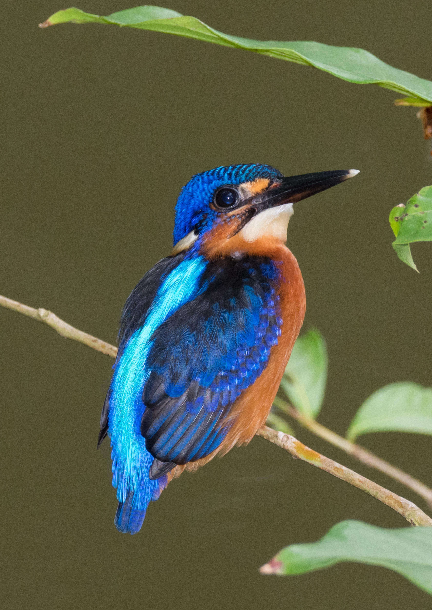

The Blue-eared Kingfisher is a small, brilliantly coloured kingfisher with deep blue upperparts, rich orange underparts, and a dark blue ear-covering area that gives the species its name. It is strongly associated with shaded forest streams, clear rivers, and other quiet freshwater habitats, particularly in heavily wooded areas. It usually hunts from low perches close to the water and dives quickly to capture small fish and aquatic prey. Compared with the Common Kingfisher, the Blue-eared Kingfisher generally has deeper blue upperparts and a darker ear region, while the Common Kingfisher shows a more obvious bright orange-and-blue contrast. The Blue-eared Kingfisher is also more strongly associated with shaded forest streams, whereas the Common Kingfisher frequently occurs in more open waterways. Compared with the White-throated Kingfisher, it is much smaller and lacks the large red bill, white throat, and contrasting brown-and-blue pattern of that species. It is also dramatically smaller than the Stork-billed Kingfisher, which has a massive red bill and much heavier body. Its small size, deep blue coloration, dark ear patch, and preference for shaded forest streams make it distinctive among Asian kingfishers.